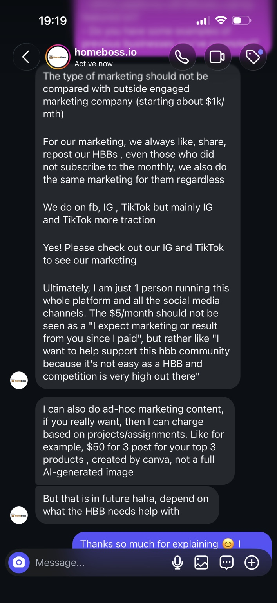
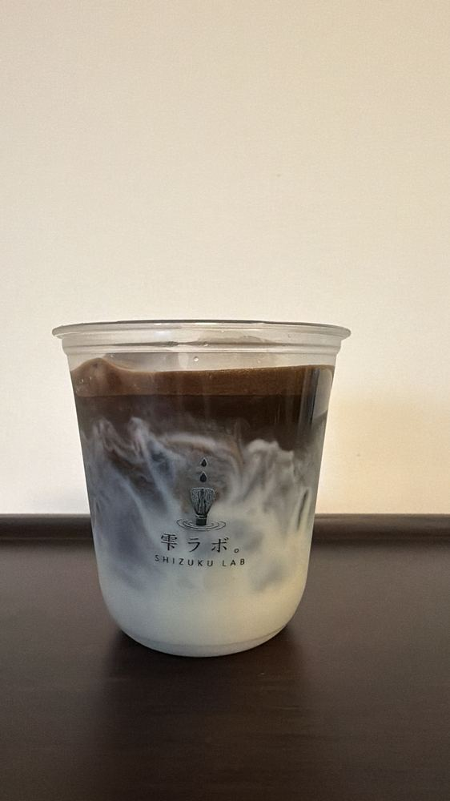

Sift
Matcha is sifted for a finer, smoother texture.

TOA PAYOH · SINGAPORE
Freshly whisked Japanese matcha, prepared slowly and shared with care.
01 · PHILOSOPHY

OUR STORY
Shizuku Lab is a home-based matcha studio in Toa Payoh. It began with a simple belief: good matcha should feel thoughtful, personal and easy to enjoy in everyday life.
Every cup is prepared only after an order is placed. No rush, no shortcuts—just careful ingredients, a smooth whisk and a quiet moment.
02 · OUR MATCHA
We use carefully selected Japanese matcha with a fresh green colour, gentle umami and enough body to remain present when paired with oat milk.
03 · THE RITUAL
Matcha is sifted for a finer, smoother texture.
Water and tea are whisked until soft foam appears.
The finished matcha is layered only when your cup is ready.
04 · WHY SHIZUKU LAB
Nothing sits waiting. Each drink begins only after your order is received.
Chosen for a creamy texture that supports the tea without hiding it.
A focused menu allows more attention to every cup and every customer.
Specialty matcha made approachable for an everyday quiet moment.

SIGNATURE
The cup that started everything. Smooth, creamy and quietly balanced.
$5.90
ROASTED
Soft, nutty and comforting, with a deep roasted finish.
$5.90
LAYERED
Fresh strawberry sweetness meets the calm bitterness of matcha.
$6.90
LOCAL, REIMAGINED
Teh-O meets freshly whisked creamy matcha in a familiar new form.
$6.1006 · FROM THE LAB
New drinks, matcha notes and small moments from behind the whisk.
A familiar local tea, reimagined through matcha.

Fresh texture, softer foam and a cup made only for you.
What we look for when choosing a matcha for milk.
07 · CONTACT
Thank you for slowing down with us.